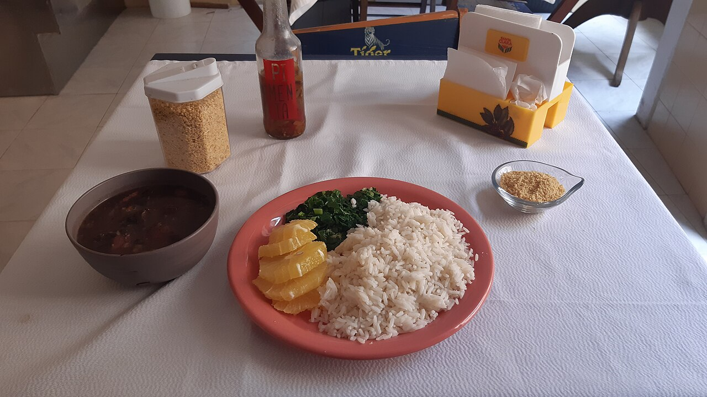
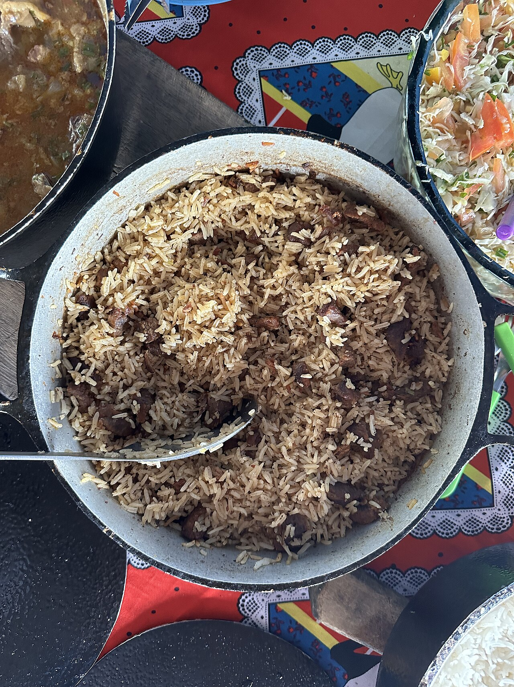
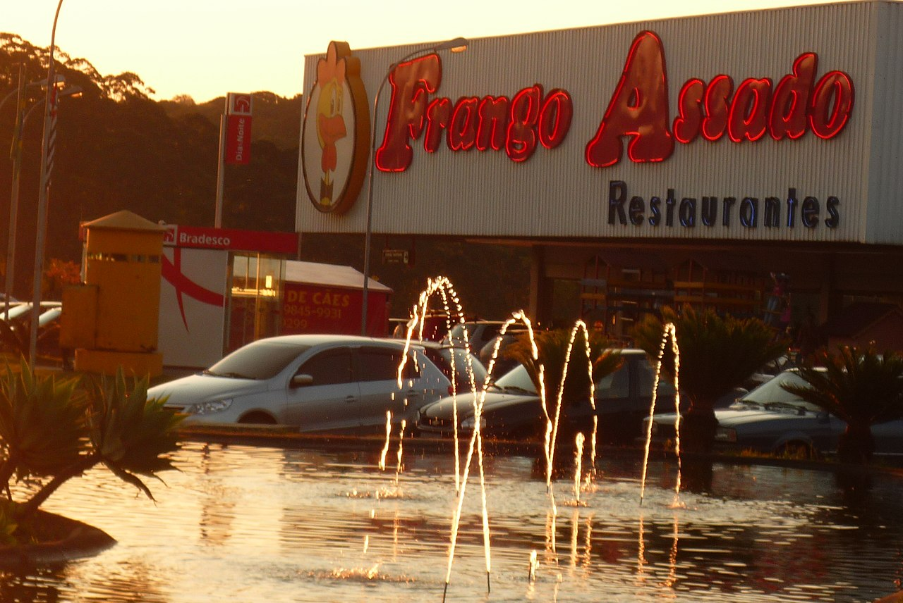
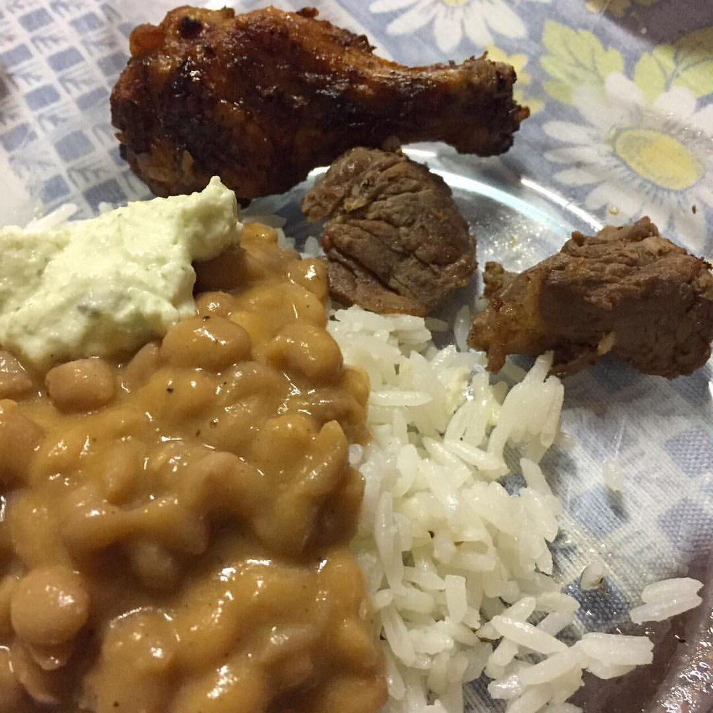

Feijoada da Bisa
Feijão preto encorpado, carnes selecionadas, arroz, couve, farofa e laranja.
Cais do Porto · Fortaleza-CE
Almoço e jantar fresquinhos, com aquele gostinho de casa. Peça direto pelo WhatsApp — sem app, sem taxa de entrega extra.
Prato fresquinhO, porção generosa e preço justo. Uma amostra do que você encontra na Bisa.

Feijão preto encorpado, carnes selecionadas, arroz, couve, farofa e laranja.

Arroz soltinho com carne desfiada e tempero da casa — aquele que abraça.

Frango dourado e suculento com os acompanhamentos do dia. Perfeito pra almoço.
Os pratos acima são sugestões — o cardápio muda todo dia. Chame no WhatsApp e confira o menu de hoje.
A Bisa Comida Caseira nasceu pra matar a saudade de comida boa. Nada de industrializado: aqui tudo é temperado e preparado no dia, do jeitinho que se faz em casa.
Estamos no Cais do Porto, em Fortaleza, com atendimento no almoço e no jantar. Venha sentar à mesa ou peça pra levar e receber quentinho.

“Comida caseira gostosa, tempero na medida e atendimento simpático.”— Cliente no Google
“Parece comida da minha mãe. Virei freguês.”— Cliente no Google
“Melhor almoço do Cais do Porto, sem exagero.”— Cliente no Google
Depoimentos ilustrativos — substituir pelos comentários reais do perfil no Google.